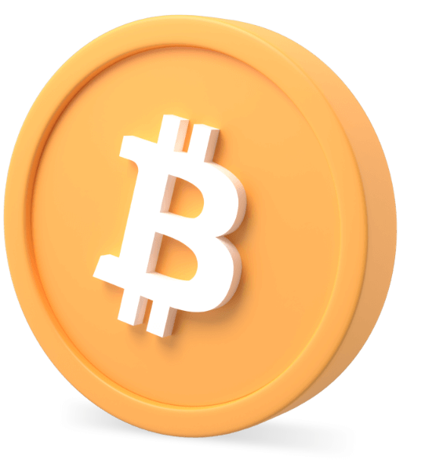

Bitcoin
Bitcoin is a decentralized digital currency, without a central
bank or single administrator, that can be sent from user to user
on the peer-to-peer bitcoin network without the need for
intermediaries.